Typography
The Font used in the body is Nunito Sans, all the font color starts at #222222
This is an H1
This is an H2
This is an H3
This is an H4
This is an H5
This is an H6
h1, h2, h3, h4, h5, h6 {
margin-top: 0;
margin-bottom: 2rem;
font-weight: 300; }
h1 { font-size: 4.0rem; line-height: 1.2;}
h2 { font-size: 3.6rem; line-height: 1.25; }
h3 { font-size: 3.0rem; line-height: 1.3; }
h4 { font-size: 2.4rem; line-height: 1.35; }
h5 { font-size: 1.8rem; line-height: 1.5; }
h6 { font-size: 1.5rem; line-height: 1.6; }
@media (min-width: 550px) {
h1 { font-size: 4.0rem; }
h2 { font-size: 3.6rem; }
h3 { font-size: 3.2rem; }
h4 { font-size: 2.6rem; }
h5 { font-size: 2.2rem; }
h6 { font-size: 1.6rem; }
} Colors
Main Colors
Doc Background
With #222222 text
#F2F2F2
rgba(248, 250, 251,1);
Indigo
With #ffffff text
#194164
rgba(25,65,100,1);
Agua Azul
With #ffffff text
#235EBA
rgba(35, 94, 186,1);
Accent Colors
Cielito Lindo
With #222222 text
#4EACE0
rgba(78, 172, 224,1);
Green Grillo
With #222222 text
#14C673
rgba(20, 198, 115,1);
Sun Yellow
With #222222 text
#FFCC4F
rgba(255, 204, 79,1);
Buttons
Disable button style for all
Set Up Buttons
These will have images on top the button is the background and the image will change when active, innactive or passive (grayed out)
Pause button interaction
When user presses pause it will flash to indicate that the recording is being pasued it can resume by pressing pause again
go from button-2 to button-2: active animation time can be determined by developer
.button-text{
text-align: center;
vertical-align: middle;
line-height: 67px; }
.button-1 {
width: 100%;
height: 67px;
padding: 1px;
color: #ffffff;
border-radius: 3px;
background-color: #235eba;}
.button-1:active {
background-color: #174381;}
.button-2{
width: 100%;
height: 67px;
padding: 1px;
border-radius: 3px;
background-color: #14c673;}
.button-2:active {
background-color: #109e5b;}
.button-3 {
width: 100%;
height: 67px;
padding: 1px;
border-radius: 3px;
background-color: #4eace0;}
.button-3:hover {
border: 2px solid #72bce6;
background-color: #4eace0;}
.button-3:active {
background-color: #3e8ab4;}
.button-4 {
width: 100%;
height: 67px;
padding: 1px;
border-radius: 3px;
background-color: #ffcc4f;}
.button-4:active {
background-color: #e5b847;}
.button-footer {
width: 235px;
height: 59px;
padding: 1px;
border: 4px solid #676767;
border-radius: 3px;
background-color: #194164;
color: #ffffff; }
.button-text-footer{
text-align: center;
vertical-align: middle;
line-height: 59px; }
.disable-button {
width: 100%;
height: 67px;
padding: 1px;
border-radius: 3px;
background-color: #c7c7c9;}
.disable-button-text {
text-align: center;
vertical-align: middle;
line-height: 67px;
text-shadow: 0 2px 0 rgba(244, 241, 234, 0.9);
font-size: 1em;
text-align: center;
color: #9e9da2;}
.button-1:hover,
.button-2:hover,
.button-4:hover,
.element-7:hover {
border: 2px solid #4eace0;}
.button-footer:active {
background-color: #ffffff;
color: #194164;}
.setup-button {
width: 595px;
height: 272px;
border-radius: 5px;
border-radius: 5px;
background-color: #ffffff;
box-shadow: 0 2px 7px rgba(0, 0, 0, .5);}
.setup-button:active {
background-color: #235eba;
box-shadow: 0 2px 7px rgba(0, 0, 0, .5);} Input field style
Here is an example of animation https://github.com/tonystar/float-label-css
Input field:
box-shadow: 0 1px 0 0 rgba(0,0,0,0.50);
Input text:
font-family: NunitoSans-Light;
color: #4A4A4A;UI Elements
Volume UI Example
http://codepen.io/emilcarlsson/pen/PPNLPySee the Pen Volume Slider by Emil Carlsson (@emilcarlsson) on CodePen.
Lava mic illustration
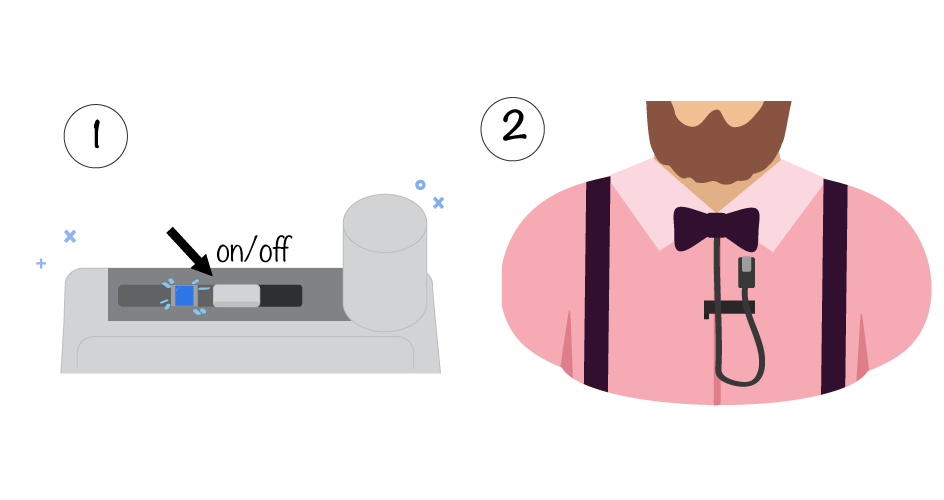Pop up specs
Black background:
backgroung-color:rgba(34, 34, 34, .7)
Content background: #f4f1ea
All graphics centered
Interactions
Camera controls
Switch
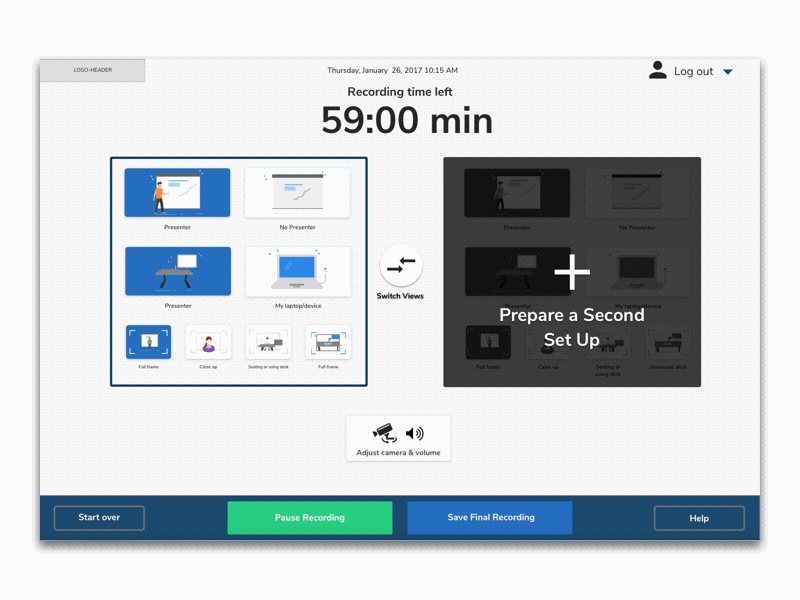When you press Run a 10 second test
NOTE: when clicking on -start over- here was only to show the 2 possible outcomes this is not expected behaviour of star over

VideoJS player framework
I found this in case you do not have a player UI but it does not have to be this one. Pleae put the play button to the center of the player like in example above this is an example and here is the actual source http://videojs.com/
See the Pen Video.js Default Skin by ferba (@ferba) on CodePen.
This is the animation for the counter
This one would be my preference and option #1
See the Pen Movie Style Film Countdown by ferba (@ferba) on CodePen.
Counter option #2
Incase this is not liekd here is an option #2 more simple, I would just using our font Nunito Sans
See the Pen Puff the Magic Countdown (CSS3) by ferba (@ferba) on CodePen.
Flat layout images
Footer
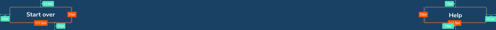Login Page
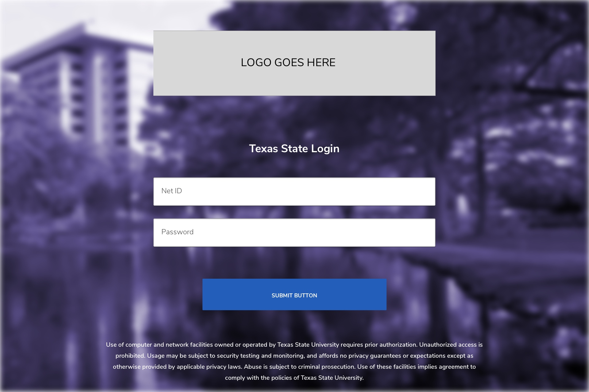Notes:
Background image/ color may change and button colors may change
For input box desire animation please refer to old CSS document, look for: .input__label--yoshiko
Intro Page
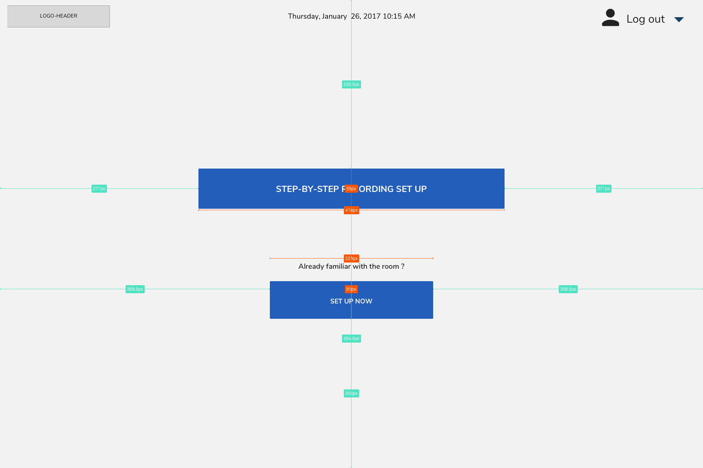Name your File
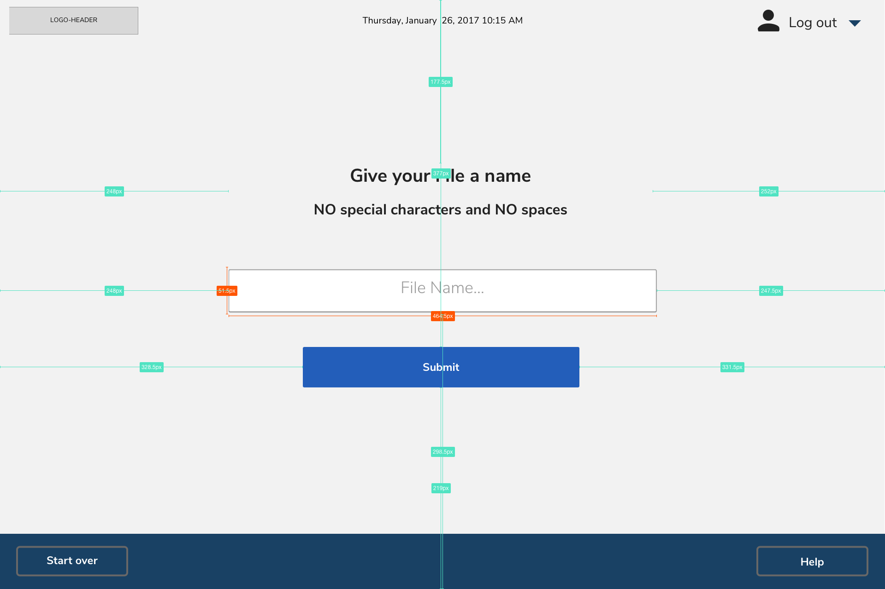Set Up Mode
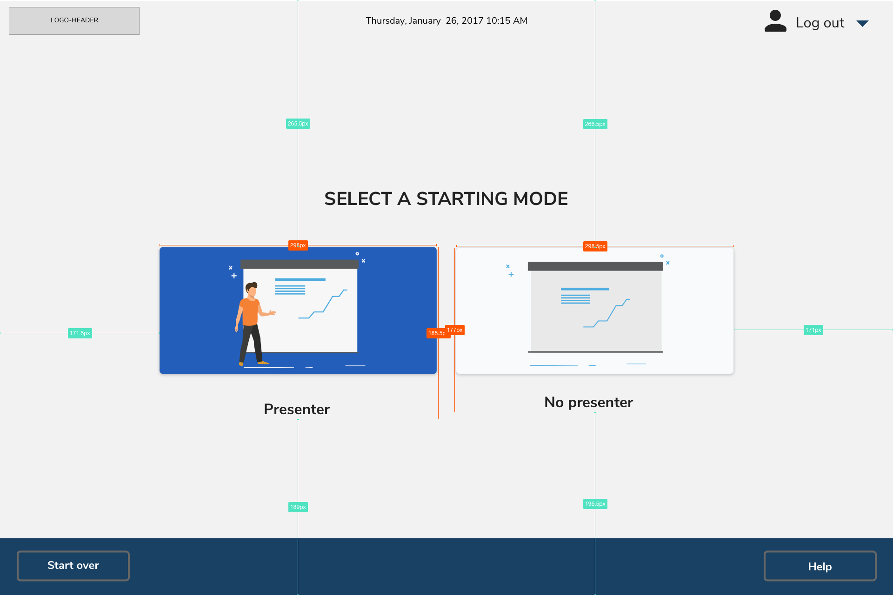Notes:
For the set up pages the layout is the same what changes is the copy for the subtitle and the icons that go in the .startup-buttons
Set Up Computer
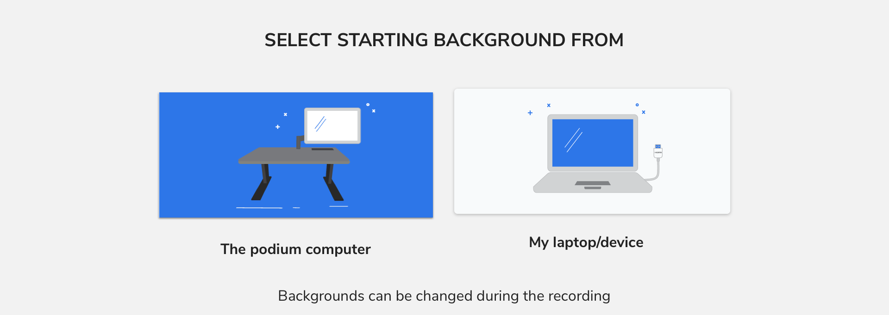Set Up Cable
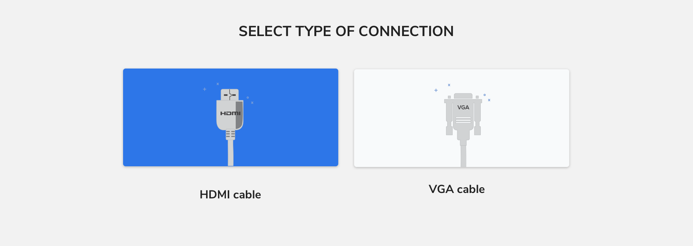Set Up Frame
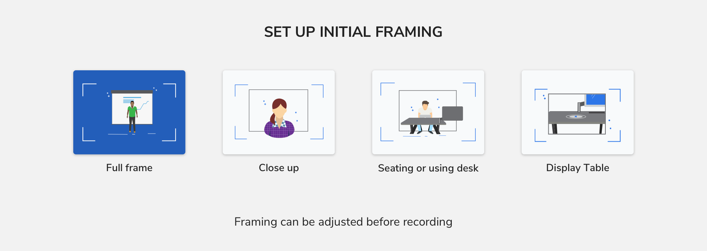Set Up Microphone
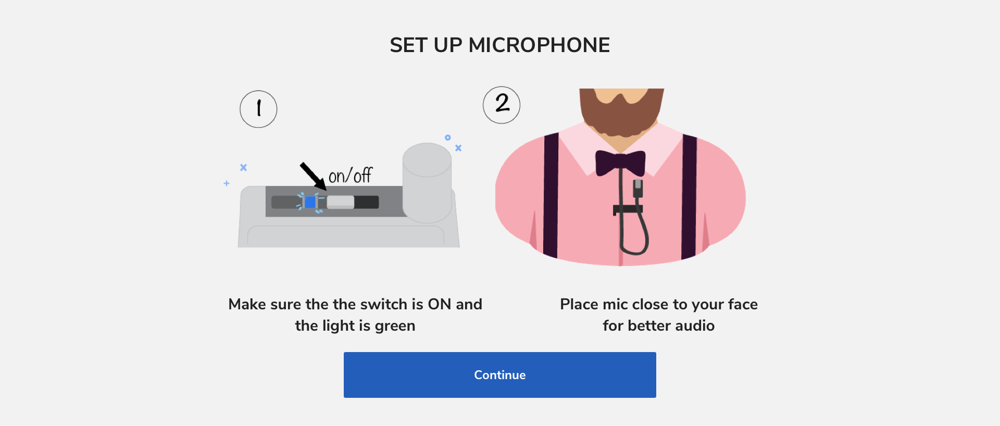Prerecording page
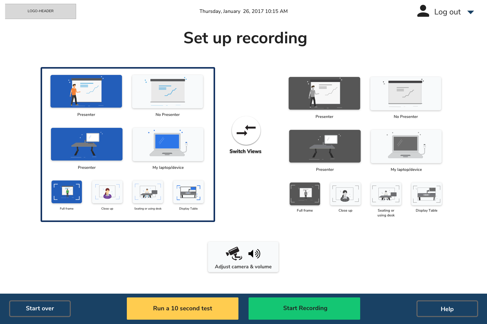Recording page
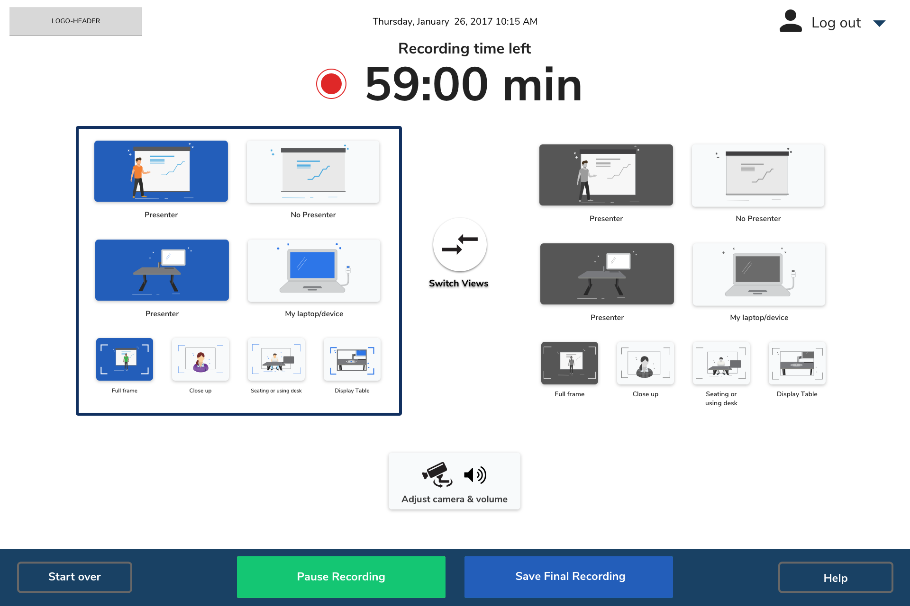Recording page with camera controls open
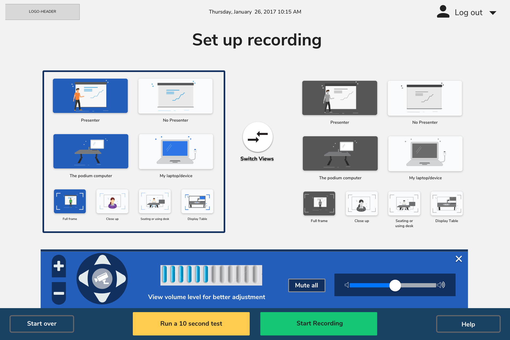End Result page
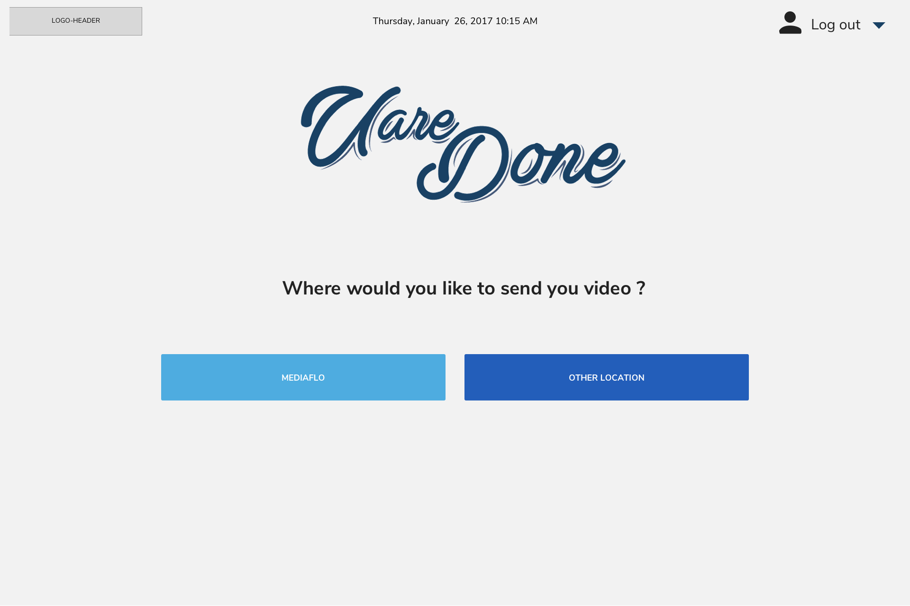Graphics used
LOGO the logo is tbd
Logout UI
located in Header in all pages
Download all assetes from the logout-graphics.zip
Modes
These are in name-normal and name-selected state, but there are also the gray version: name-gray-normal and name-gray-selected eg.
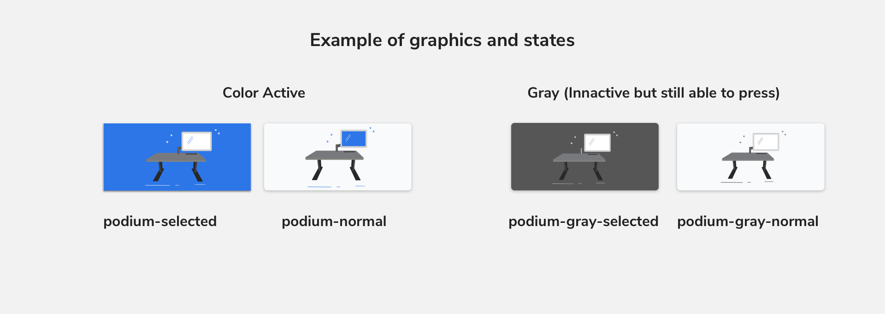Naming will match content on pages. Download all assetes from the setup-graphics.zip
Switch graphic
The button will use the same specs as .setup-button in normal state, except is a circle.
Download all individual assetes from the switch.zip
Note:
There is an animation that happens with this button is pressed the color background that it changes to is background-color:#2D76E8
Adjust Camera and volume button
The button will use .setup-button in normal state. It has text using H4 Adjust camera and volume
assets needed are 2 icons in one png for easier use
Camera control UI
The arrows have a shadow of box-shadow: 0 2px 7px rgba(0, 0, 0, .5); in normal state. For press remove the shadow so it appears to be "pressed"
Download all individual assetes from the camera-control.zip
Zoom UI
The background is background: #113060; border-radius: 44px 44px 0 0; in normal state. For press change the background color to background: #9E9DA2; so it appears to be "pressed"
Download all individual assetes from the zoom-control.zip
Volume control UI
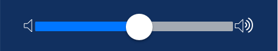The volume has a background color #112F60 for interaction please view: Volume UI Example from the UI elements section"
Download all individual assetes from the volume-control.zip